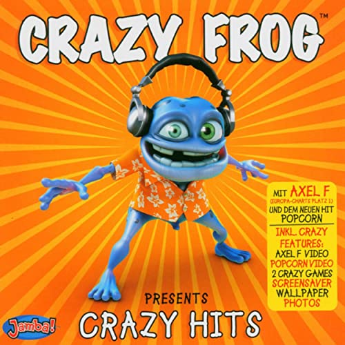

1960s
3 albums
Highest entry: The Shaggs — Philosophy of the World (#9)
Lowest entry: William Shatner — The Transformed Man (#61)
1970s
5 albums
Highest entry: Sgt. Pepper's Lonely Hearts Club Band OST (#18)
Lowest entry: Bob Dylan — The Self Portrait (#70)
1980s
5 albums
Highest entry: The Clash — Cut the Crap (#11)
Lowest entry: Neil Young — Everybody's Rockin' (#68)
1990s
11 albums
Highest entry: Methods of Mayhem — Methods of Mayhem (#5)
Lowest entry: Red Hot Chili Peppers — One Hot Minute (#66)
2000s
29 albums
Highest entry: Brokencyde — I'm Not a Fan, But the Kids Like It! (#1)
Lowest entry: The Darkness — One Way Ticket to Hell... and Back (#71)
2010s
18 albums
Highest entry: Blood on the Dance Floor — Bad Blood (#6)
Lowest entry: Lou Reed and Metallica — Lulu (#69)
1968
1 album
Only entry: William Shatner — The Transformed Man (#61)
1969
2 albums
Highest entry: The Shaggs — Philosophy of the World (#9)
Lowest entry: Pink Floyd — Ummagumma (#45)
1970
2 albums
Highest entry: Attila — Attila (#41)
Lowest entry: Bob Dylan — Self Portrait (#70)
1975
1 album
Only entry: Lou Reed — Metal Machine Music (#67)
1978
1 album
Only entry: Emerson, Lake & Palmer — Love Beach (#38)
1980
1 album
Only entry: Meco Monardo & Christmas in the Stars (#28)
1983
1 album
Only entry: Neil Young & Everybody's Rockin' (#68)
1985
1 album
Only entry: The Clash & Cut the Crap (#11)
1987
1 album
Only entry: Mick Jagger & Primitive Cool (#48)
1989
1 album
Only entry: Dee Dee King & Standing in the Spotlight (#62)
1991
1 album
Only entry: Tin Machine & Tin Machine II (#56)
1993
1 album
Only entry: Billy Idol & Cyberpunk (#52)
1994
2 albums
Highest entry: Mr Blobby — Mr Blobby: The Album (#19)
Lowest entry: Naomi Campbell — Baby Woman (#60)
1995
1 album
Only entry: Red Hot Chili Peppers & One Hot Minute (#66)
1996
1 album
Only entry: Babylon Zoo & The Boy with X-Ray Eyes (#64)
1997
1 album
Only entry: Mötley Crüe & Generation Swine (#27)
1998
2 albums
Highest entry: Vanilla Ice — Hard to Swallow (#13)
Lowest entry: Van Halen — Van Halen III (#50)
1999
2 albums
Highest entry: Methods of Mayhem — Methods of Mayhem (#5)
Lowest entry: Coal Chamber — Chamber Music (#24)
2000
1 album
Only entry: Uncle Kracker & Double Wide (#3)
2001
2 albums
Highest entry: Machine Head — Supercharger (#43)
Lowest entry: Fischerspooner — #1 (#57)
2002
2 albums
Highest entry: Phil Collins — Testify (#15)
Lowest entry: Lauryn Hill — MTV Unplugged No. 2.0 (#63)
2003
4 albums
Highest entry: “Macho Man” Randy Savage — Be a Man (#42)
Lowest entry: Liz Phair — Liz Phair (#65)
2004
5 albums
Highest entry: Gene Simmons — Asshole (#8)
Lowest entry: Westlife — Allow Us to Be Frank (#55)
2005
4 albums
Highest entry: Crazy Frog — Crazy Frog Presents Crazy Hits (#2)
Lowest entry: The Darkness — One Way Ticket to Hell... and Back (#71)
2006
2 albums
Highest entry: Towers of London — Blood, Sweat & Towers (#14)
Lowest entry: Razorlight — Razorlight (#30)
2007
1 album
Only entry: The Stooges & The Weirdness (#58)
2008
6 albums
Highest entry: True Symphonic Rockestra — Concerto in True Minor (#4)
Lowest entry: Cute Is What We Aim For — Rotation (#53)
2009
3 albums
Highest entry: Brokencyde — I'm Not a Fan, But the Kids Like It! (#1)
Lowest entry: Chris Cornell — Scream (#31)
2010
1 album
Only entry: Lil Wayne & Rebirth (#12)
2011
5 albums
Highest entry: Richard Ashcroft — United Nations of Sound (#20)
Lowest entry: Lou Reed and Metallica — Lulu (#69)
2012
2 albums
Highest entry: The Enemy — Streets in the Sky (#35)
Lowest entry: Green Day — ¡Tré! (#47)
2013
4 albums
Highest entry: Blood on the Dance Floor — Bad Blood (#6)
Lowest entry: Black Flag — What The... (#39)
2014
2 albums
Highest entry: U2 — Songs of Innocence (#40)
Lowest entry: The Twang — Neon Twang (#59)
2016
1 album
Only entry: Corey Feldman & Angelic 2 the Core (#10)
2017
2 albums
Highest entry: Linkin Park — One More Light (#26)
Lowest entry: Bush — Black and White Rainbows (#49)
2018
1 album
Only entry: Lil Xan & Total Xanarchy (#7)
1
2004 — 210 points
Highest entry: Gene Simmons — Asshole (#8)
Albums in the Flop 20: 2
Total albums in the chart: 5
2
2008 — 209 points
Highest entry: True Symphonic Rockestra — Concerto in True Minor (#4)
Albums in the Flop 20: 1
Total albums in the chart: 6
3
2011 — 187 points
Highest entry: Richard Ashcroft — United Nations of Sound (#20)
Albums in the Flop 20: 1
Total albums in the chart: 5
4
2013 — 182 points
Highest entry: Blood on the Dance Floor — Bad Blood (#6)
Albums in the Flop 20: 1
Total albums in the chart: 4
5
2009 — 167 points
Highest entry: Brokencyde — I'm Not a Fan, But the Kids Like It! (#1)
Albums in the Flop 20: 2
Total albums in the chart: 3
1
Doug Wimbish
Performed bass on Mick Jagger — Primitive Cool (#48)
Performed bass on Billy Idol — Cyberpunk (#52)
Performed bass on Naomi Campbell — Baby Woman (#60)
2
Kid Rock
Performed on and produced Uncle Kracker — Double Wide (#3)
Performed guest vocals on Methods of Mayhem — Methods of Mayhem (#5)
3
Tommy Lee
Performed on and produced Methods of Mayhem — Methods of Mayhem (#5)
Performed on and produced Mötley Crüe — Generation Swine (#27)
4
Fred Durst
Performed guest vocals on Methods of Mayhem — Methods of Mayhem (#5)
Performed on and produced Limp Bizkit — Results May Vary (#46)
5
Snoop Dogg
Performed guest vocals on Methods of Mayhem — Methods of Mayhem (#5)
Performed guest vocals on Limp Bizkit — Results May Vary (#46)
6
Dave Navarro
Performed guitar on Gene Simmons — Asshole (#8)
Performed guitar and backing vocals on Red Hot Chili Peppers — One Hot Minute (#66)
7
Doug Ardito
Performed bass on Vanilla Ice — Hard to Swallow (#13)
Performed on and produced Puddle of Mudd — re:(disc)overed (#32)
8
Jimmy Pop
Performed guest vocals on Vanilla Ice — Hard to Swallow (#13)
Performed on and produced Bloodhound Gang — Hefty Fine (#33)
9
David Paich
Performed keyboards on the Sgt. Pepper's Lonely Hearts Club Band original soundtrack (#18)
Performed piano and harpsichord on Mötley Crüe — Generation Swine (#27)
10
Jeff Beck
Performed guitar on the Sgt. Pepper's Lonely Hearts Club Band original soundtrack (#18)
Performed guitar on Mick Jagger — Primitive Cool (#48)
1
Madonna — American Life (#44)
#1 (certified platinum by the RIAA)
+
2
Ashlee Simpson — I Am Me (#54)
#1 (certified platinum by the RIAA)
+
3
Linkin Park — One More Light (#26)
#1 (certified gold by the RIAA)
+
4
Lil Wayne — Rebirth (#12)
#2 (certified platinum by the RIAA)
+
5
Lauryn Hill — MTV Unplugged No. 2.0 (#63)
#3 (certified platinum by the RIAA)
+
6
Limp Bizkit — Results May Vary (#46)
#3 (certified platinum by the RIAA)
+
7
Guns N' Roses — Chinese Democracy (unranked)
#3 (certified platinum by the RIAA)
+
8
Red Hot Chili Peppers — One Hot Minute (#66)
#4 (certified 2x platinum by the RIAA)
+
9
Bob Dylan — Self Portrait (#70)
#4 (certified platinum by the RIAA)
+
10
Mötley Crüe — Generation Swine (#27)
#4 (certified gold by the RIAA)
+
1
Razorlight — Razorlight (#30)
#1 (certified 5x platinum by the BPI)
+
2
Madonna — American Life (#44)
#1 (certified platinum by the BPI)
+
3
Bob Dylan — Self Portrait (#70)
#1 (not certified by the BPI)
+
4
Guns N' Roses — Chinese Democracy (unranked)
#2 (certified platinum by the BPI)
+
5
Red Hot Chili Peppers — One Hot Minute (#66)
#2 (certified gold by the BPI)
+
6
Westlife — Allow Us to Be Frank (#55)
#3 (certified 2x platinum by the BPI)
+
7
Linkin Park — One More Light (#26)
#4 (certified gold by the BPI)
+
8
Van Halen — Van Halen III (#50)
#4 (not certified by the BPI)
+
9
Pink Floyd — Ummagumma (#45)
#5 (certified gold by the BPI)
+
10

Crazy Frog — Crazy Hits (#2)
#4 (certified gold by the BPI)
+
1
Guns N' Roses — Chinese Democracy
2 hours, 27 minutes, 11 seconds
+
2
Machine Head – Supercharger
2 hours, 16 minutes, 54 seconds
+
3
Mr Blobby – Mr Blobby: The Album
1 hour, 58 minutes, 1 second
+
4
Billy Idol – Cyberpunk
1 hour, 51 minutes, 4 seconds
+
5
Vanilla Ice – Hard to Swallow
1 hour, 50 minutes, 31 seconds
+
1
Dirty Vegas — One
24 minutes, 32 seconds
+
2
Bush — Black and White Rainbows
25 minutes, 15 seconds
+
3
Six Feet Under — Graveyard Classics 2
25 minutes, 33 seconds
+
4
Mick Jagger — Primitive Cool
27 minutes, 12 seconds
+
5
Dee Dee King — Standing in the Spotlight
27 minutes, 55 seconds
+